Bottle Funnel Mechanism
Co-Designer
- Caitlin: Vocationally a Dental Hygienist in training, #1 Steven King fan, loves four-wheelers.
- Living situation: 2 Story Home.
- Daily Routine: Sticks to staying at home due to underlying conditions.
- Relationship: Childhood friends.
- Impairments: Recent Stroke.
- Solutions Tried Before: N/A
Co-Designer Needs Statement
- BATHING: Caitlin needs to squeeze bottles in order to bathe herself/maintain personal hygiene.
- DRESSING: Caitlin needs to put limbs through sleeves of shirts and pants.
- EATING: Caitlin needs to hold both cups and silverware.
- WORK: Caitlin needs to wait tables at the pizza palace she works at.
Product Requirements
A lever that can be pressed with the left side of the body and release soap into the mobile hand. It must also fit in a shower without taking up too much room and be waterproof.
Initial Brainstorming Narrative
Focus: The most prevalent issue was found to be bathing as squeezing bottles with one arm is very difficult. A device that could squeeze bottles general with the use of one arm was the clarified issue. When researching other products all were costly and essentially required two hands and sensor leaving me to come up with the current idea.
NOTE: Pump bottle were not sufficient in portions of soap and was a lot of strain on her other hand/arm.
Initial Prototype
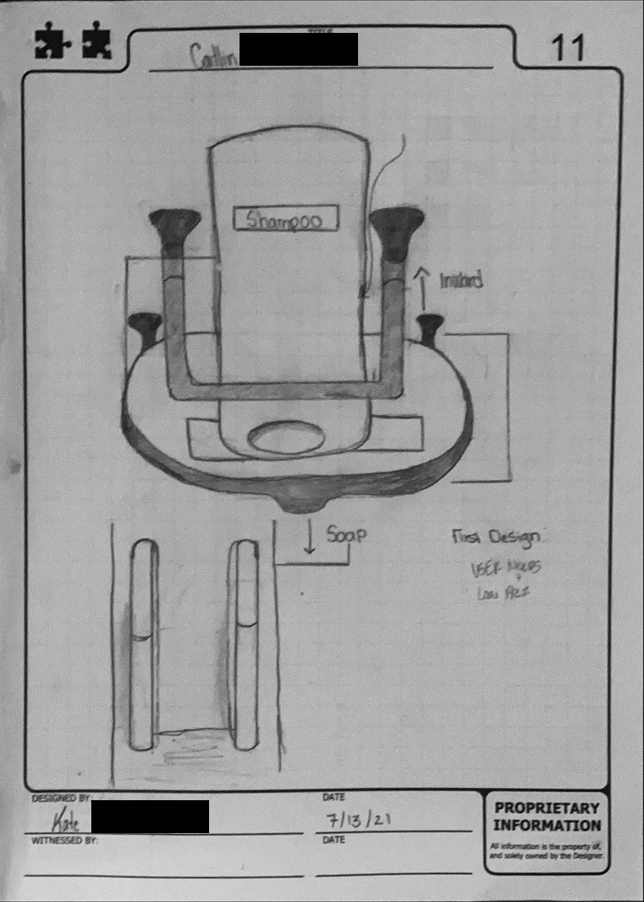
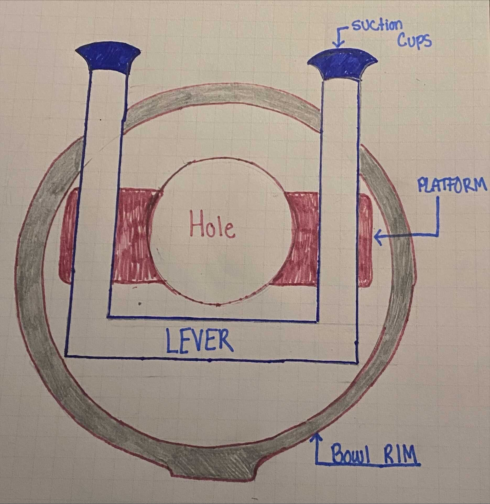
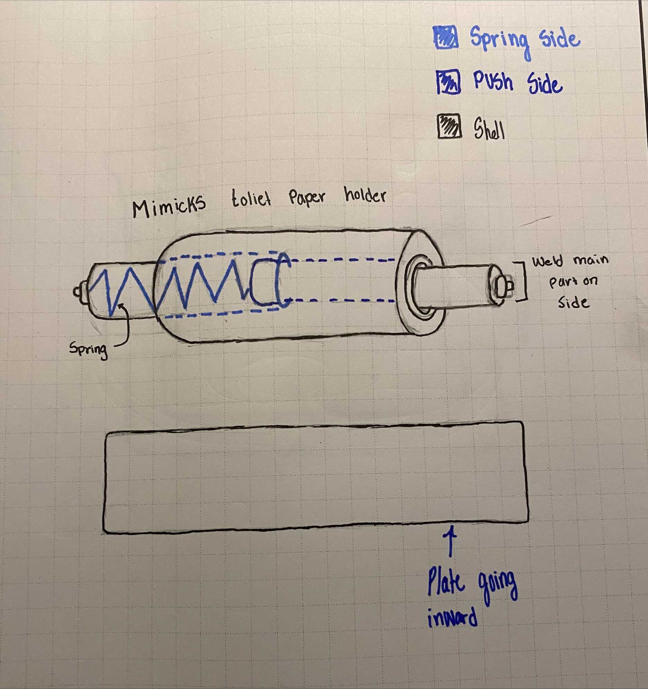
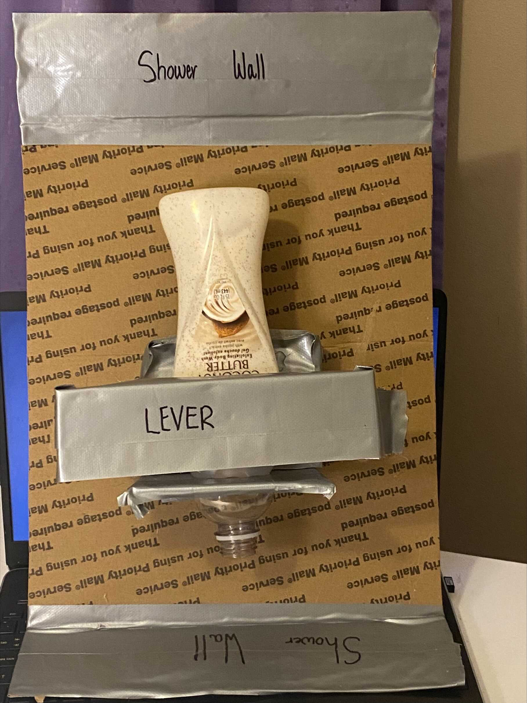
Second Prototype
Overall Product Objective: Create a funnel-like mechanism that holds soap, allows for pumping, can be transported, and fits in the shower.
Prototype Design Objectives: A device that is portable, can be used with one hand, is a funnel-like mechanism that holds soap, allows for pumping or release from cap, and fits in the shower without taking too much space. Once tested in a shower and seeing how it functions with the use of one arm, new iterations can be implemented from there.
NOTE: A pump bottle is not adequate because one of the co-designer's leg has trouble bending. Something at arm's length that she can squeeze soap into and then falls into her hand is needed.
Assumptions: It is assumed that this a consistently wet and slippery environment. It also assumed that multiple people need to use the shower without disruption of the Assistive Technology implemented.
Bill of Materials
- 3 Suction Cups-Home Depot - $3.96
- 3D Printed Cone/Pump made by Ender 3 printer - filament $24
- Loctite Extreme Glue Gel-Home Depot - $5.47
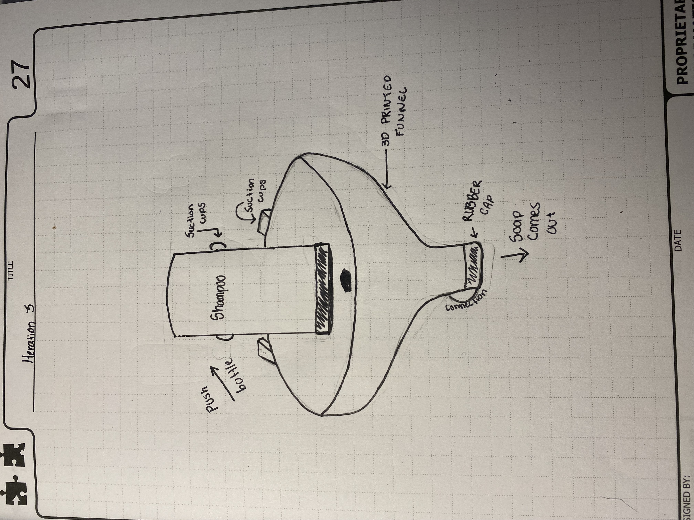
Testing Plan
In testing the prototype I will be using the product myself while sending updates and videos to my co-designer as is the only viable option. By attaching the the device to my shower wall the following was completed to effectively test the device:
- Run the water in the shower to create a slippery and wet environment. This is also done to test water-resistance.
- Remove cap on soap bottle and pick it up with the right hand to replicate the loss of mobility in the left arm.
- Squeeze the soap into the funnel and place the bottle back down.
- Pump the bottom of the cone or remove cap (depending on what co-designer prefers).
- Observe how much soap comes out and the effectiveness of the device in the shower.
Testing Results
- Suction Cups did not effectively hold in the wet environment (hence the duct tape in the pictures).
- The funnel was 5 inches too big in my shower therefore reducing the size is necessary as my co-designer's shower is smaller than mine.
- Pump was preferred by co-designer and the 3D printed pump was flimsy- a different material is needed.
- The attachment of the pump with glue made cleaning of the device hard.
- The attachment of the pump with glue made cleaning of the device hard.
- Not great portability.

Prototype Conclusions
For the future:
- More effective and easily portable suction cups
- The funnel needs to be stabilized thoroughly
- The pump needs to be modified with new materials
Funnel is being redesigned and so is pump! *New Prototype is being made with modified materials*
Final Prototype
Bill of Materials
- BLUE PLA FILAMENT - 1.75MM, 1KG SPOOL ($24.99)
- Suction Grab Bar -16 in. ($14.98)
- Manual Push-Pump ($8.60)
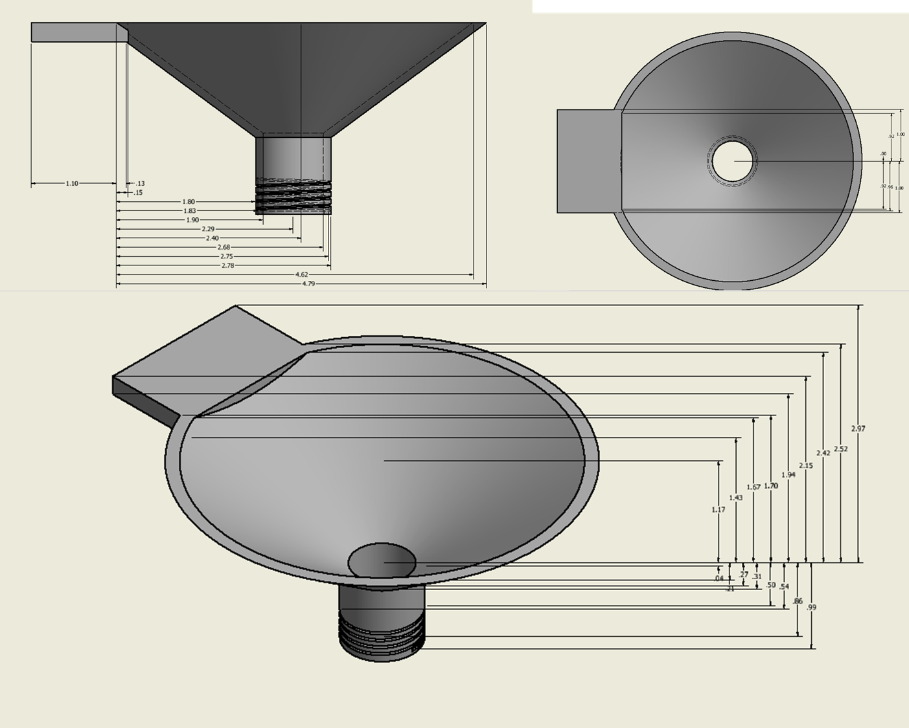

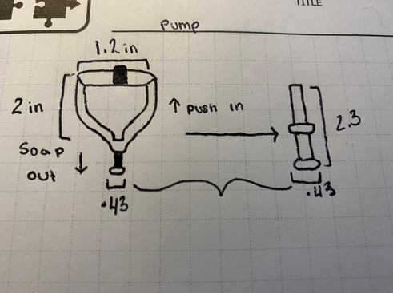
Build Instructions
Build:
- Taking the suction grab bar, use a sharpie and put two marks on the side preferred for funnel to be located on the bar. Put marks 2.2 inches inward on the left and right side of the bar spaced .86 inches apart from each other.
- Take the funnel and using the sharpie make two marks on the flat bed of the funnel approximately .62 inches inward on both sides, .69 inches apart.
- Place the flat side of the funnel on the suction cup bar, lining the lines up.
- Take a drill and use two .34 inch screws (top view of the screw) and drill into the lines connecting the bar and funnel.
- Take the pump and screw it to the bottom of the funnel into its proper place
NOTE: Be careful where you place the screws as plastic can break easily.
Installation:
- Take the suction cup bar (make sure the bottom is wiped clean) and find a flat surface for mounting.
- Horizontally place the bar on the flat surface and make sure the plastic switches are up.
- Firmly plant each switch downward and see if the bar sticks.
- You'll know you're set when green marks appear on the bar.
Test Plan
- Using one arm (right arm) I squeezed the soap bottle into the funnel and place it back down.
- Using my right arm once again, I then pumped the soap out with the bottom mechanism.
- By going in the shower myself I tested how much space was taken up.
- With one hand I then removed the bar from the shower wall and moved it around the house to see how easily portable it was.
Testing Results
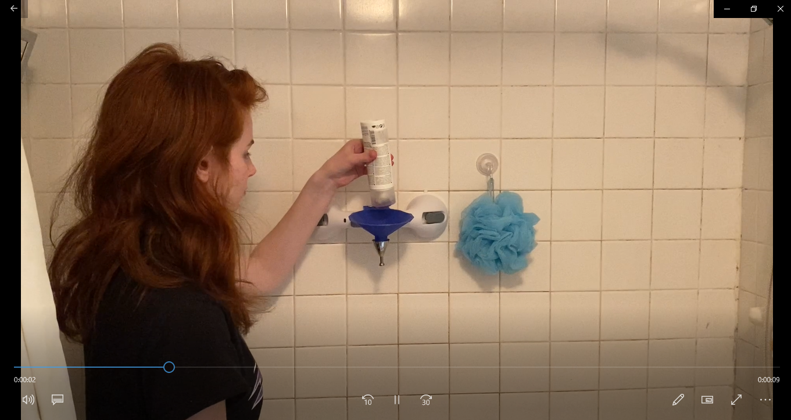
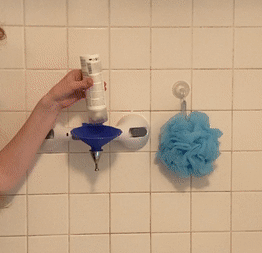
After testing the mechanism it was observed that when pumping the funnel wasn't fastened enough on the bar and kept moving up and down. On the funnel a flat side should be made and drilled to the side of the funnel, so it won't move up and down so much.
Extra testing done with the product used as a kitchen tool:
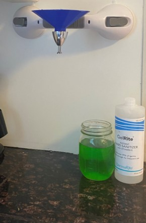
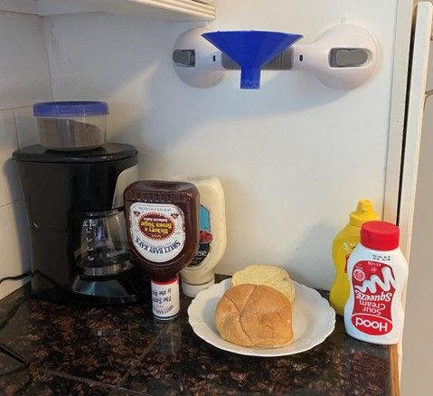
Future Improvements
- Improve Stability of Cone on Bar by Adding a Flat Side on The Funnel to Drill on the Bar.
- Provide Waterproof Materials on Pump.
- Implement Bigger Threads on Bottom of Funnel.
Scalability
- This device is not specific to a bathroom environment, although it thrives in one. This is small enough so that it can fit in any location and be stored compatibly.
- This can be used for people who struggle from the effects of strokes, but can be used for people with lower motor abilities.
- This is also composed of inexpensive materials that can be replaced and or reproduced in different copies.
Design Process Reflection
In doing this process again I would focus on the following things:
- Acquiring measurements specific to the customer's environment and to NOT eyeball products.
- Before buying materials to test, address co-designer and get their input. Example: I originally thought a cap would be a better idea than a pump so I bought caps. When consulting my co-designer she preferred a pump so I had to change my design.
- Sticking to the first idea never works-be more flexible with design and willing to make changes.
- Simple is sometimes better.